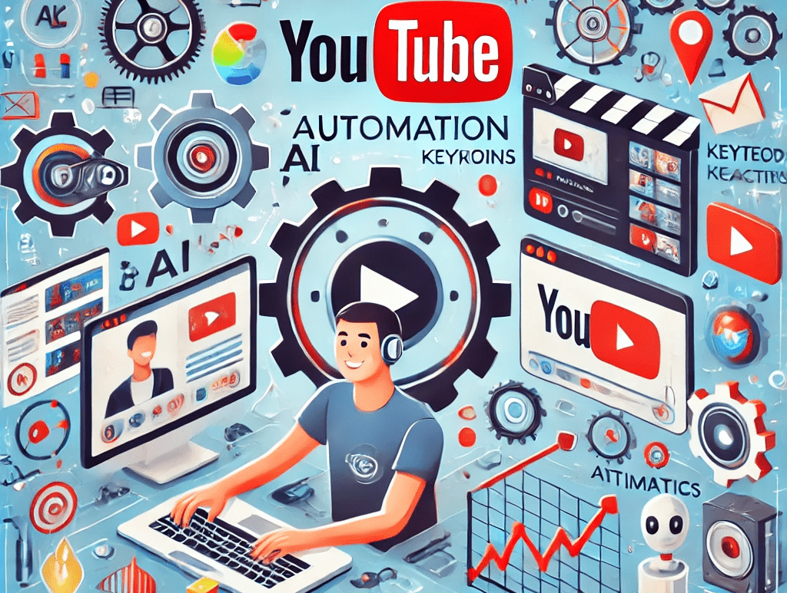

YouTube Automation: How It Can Help Save Time and Find Profitable Niches
If you’ve ever tried to build a successful YouTube channel, you know that it’s no easy feat. Between brainstorming ideas, creating content, editing, uploading, and optimizing for search engines, it can feel like you’re juggling a thousand tasks at once. However, what if I told you that there’s a way to automate much of this process and free up your time to focus on what truly matters—creating amazing content? That’s where YouTube automation comes in.
In this article, we’re going to dive into what YouTube automation is, how it works, and how you can use tools like NexLev, an AI-powered platform, to skyrocket your YouTube success.

What is YouTube Automation?
Let’s start with the basics: YouTube automation is the process of using tools and software to automate certain tasks involved in running a YouTube channel. The goal is to streamline repetitive processes and save time, allowing you to focus on more creative aspects of your channel.
Now, you might be thinking, “Wait, doesn’t YouTube want us to do everything manually?” Well, yes, YouTube prefers a human touch when it comes to engagement (you know, responding to comments, creating authentic content, etc.), but many tasks can be automated without compromising quality or engagement.
Think of it like the autopilot feature on an airplane. You still have to be the pilot, but the plane’s autopilot can handle the boring stuff like maintaining altitude and speed. Similarly, YouTube automation tools can handle the repetitive tasks like video optimization, keyword research, and analytics tracking, leaving you more time for your creative genius to shine.
The Benefits of YouTube Automation
- Time-Saving
Creating content for YouTube is a time-consuming process. But why should you spend hours on tasks like keyword research, thumbnail creation, or checking video analytics when there are tools that can do it for you? By automating these processes, you can focus your energy on creating high-quality videos that your audience will love.
- Increased Efficiency
With automation, you’re able to work smarter, not harder. Rather than manually doing tasks that take up a lot of time, you can set up automation to handle them. This increases your efficiency and allows you to create more content with less effort.
- Optimized Video Performance
To grow your channel, you need to optimize your videos for search. YouTube’s algorithm is pretty picky about which videos it recommends to viewers. By using automation tools, you can analyze what’s working and make adjustments accordingly, ensuring your videos are always optimized for maximum exposure.
- Better Analytics Tracking
Automation tools can help you keep track of all the important metrics, such as watch time, engagement, and audience retention. You’ll get valuable insights that will guide your content creation strategy and show you what your audience really wants.
- Finding Profitable Niches
One of the biggest challenges YouTubers face is identifying profitable niches. Sure, you might be passionate about a topic, but is there an audience for it? Is it profitable? Automation tools, like NexLev, can help you discover profitable niches by analyzing trends and identifying untapped opportunities.
How YouTube Automation Works
Now that we’ve covered the benefits of YouTube automation, let’s take a closer look at how it actually works. There are various types of YouTube automation tools, each designed to handle different aspects of running a channel. These include:
- Video Optimization Automation: To succeed on YouTube, you need to make sure your videos are optimized for search. This includes using the right keywords, tags, descriptions, and titles. Tools like TubeBuddy and VidIQ help automate the process of keyword research and optimization, so you don’t have to spend hours doing it manually. These tools can even suggest the best keywords for your videos based on what’s trending in your niche.
- Thumbnail Creation Automation: Thumbnails are one of the most important factors in whether people click on your video or not. Tools like Canva and Snappa allow you to create eye-catching thumbnails in minutes. Some tools even have AI-powered features that can analyze the video’s content and suggest the best thumbnail designs. This saves you from spending hours trying to make the perfect thumbnail.
- Social Media Sharing Automation: Sharing your videos on social media is a great way to get more views, but it can be tedious to post them manually on every platform. Tools like Buffer and Hootsuite let you schedule your social media posts in advance, so your videos are automatically shared across platforms like Facebook, Twitter, and Instagram without you having to lift a finger.
- Comment Moderation and Engagement Automation: Engaging with your audience is essential for growing your YouTube channel. However, replying to every comment manually can be overwhelming, especially if you have thousands of subscribers. You can automate comment moderation and even set up automated replies using tools like YouTube Studio or third-party platforms like SocialBee. This helps you maintain a connection with your audience without getting bogged down by repetitive tasks.
- Analytics and Performance Tracking Automation: YouTube’s built-in analytics tool is great, but it can be difficult to interpret all the data it provides. This is where automation tools like NexLev come in. They can analyze your video’s performance and provide insights into what’s working and what’s not. You’ll get easy-to-understand reports that help you make informed decisions about your content strategy.
How NexLev Can Help You with YouTube Automation
Now that we’ve talked about the general benefits of YouTube automation, let’s focus on NexLev, an AI-powered tool that can help take your YouTube success to the next level. NexLev is designed to save you time, improve your content strategy, and help you find profitable niches, all using the power of artificial intelligence.
- AI-Powered Niche Discovery: Finding a profitable niche on YouTube can be a challenge, but NexLev uses AI to analyze YouTube trends, identify gaps in the market, and suggest niches that are ripe for growth. Whether you’re a gaming channel or a beauty guru, NexLev can help you find a niche that has high potential for success.
- Automated Keyword Research: NexLev’s AI can analyze the performance of millions of YouTube videos to find the most relevant and high-traffic keywords for your niche. By automating the keyword research process, you’ll save time and increase your chances of ranking higher in YouTube search results.
- Content Strategy Optimization: Once you’ve identified your niche, NexLev helps you create a content strategy that resonates with your audience. It analyzes successful videos in your niche and provides insights into what topics are trending, what type of content performs well, and how you can differentiate yourself from the competition.
- Competitor Analysis: With NexLev, you don’t have to guess what your competitors are doing. The tool helps you analyze your competitors’ channels, including their video performance, engagement rates, and content strategies. This data can help you fine-tune your approach and stay ahead of the game.
- Time-Saving Automation: NexLev automates various aspects of your YouTube workflow, such as video optimization, keyword tracking, and performance analytics. This allows you to focus on creating amazing content, knowing that the tedious tasks are being handled by AI.
How to Get Started with YouTube Automation
If you’re ready to take the leap and start automating your YouTube channel, here’s how you can get started:
- Choose Your Tools
There are many YouTube automation tools out there, so it’s important to choose the ones that best suit your needs. If you’re looking for keyword research and video optimization, tools like TubeBuddy and VidIQ are great options. For AI-powered niche discovery and content strategy, NexLev is an excellent choice.
- Set Up Your Automation
Once you’ve chosen your tools, it’s time to set them up. Most tools have user-friendly interfaces, so you won’t need to be a tech expert to get started. Take your time to learn how the tools work and experiment with different features.
- Monitor Your Results
Automation is not a “set it and forget it” process. You’ll need to monitor your results and make adjustments as needed. Keep an eye on your video performance, audience engagement, and analytics to ensure that your automation strategy is working.
- Keep Creating Great Content
The most important part of any YouTube channel is the content. While automation can help you save time and optimize your strategy, it’s up to you to create content that resonates with your audience. Keep your creativity flowing, and let automation handle the boring stuff.
Conclusion
YouTube automation is a game-changer for anyone looking to grow their channel quickly and efficiently. By automating tasks like keyword research, video optimization, and performance tracking, you can save time, increase your efficiency, and focus on what truly matters: creating amazing content. Tools like NexLev take it to the next level by using AI to help you discover profitable niches and create a data-driven content strategy.
So, if you’re tired of feeling overwhelmed by the countless tasks involved in running a YouTube channel, it’s time to embrace automation. Let the machines do the hard work, so you can focus on the fun stuff—like growing your channel and building your audience. Happy automating!